Průchod veřejným webem, účastnickou částí a organizátorským dashboardem z pohledu PO: co uživatele zdrží, zmate nebo mu na telefonu zůstane skryté. Každý nález má místo výskytu, dopad a doporučení.
Stav po zapracování · 8. 11. 2026
10 nálezů zapracováno (#1, #3–10, #12), #13 již bylo vyřešeno. Nález #2 je mimo dohodnutý scope.
Nové snímky zachycují aktuální aplikaci nad lokálními demonstračními daty: mobil 360 × 800 px, desktop 1440 × 900 px. Původní snímky z auditu zůstávají jako výchozí stav; níže jsou doplněny snímky po úpravách.
Správa akce → Přihlášky · šířka 360 px · světlý i tmavý režim
Problém
Přepínač „Seznam přihlášek / Ke schválení / Vyhodnocení“ je širší než obrazovka. Třetí záložka končí uprostřed slova a nic nenaznačuje, že se dá posunout.
Dopad
Organizátor na telefonu nenajde vyhodnocení termínu, tedy nejnovější funkci sprintu.
Doporučení
Na mobilu zachovat záložky v jednom řádku a dát zřetelně najevo posun do strany. Pás záložek má lícovat s pravým okrajem telefonu. Stejný vzor použít pro přepínač termínů ve vyhodnocení.
Přihlášky na 360 px: „Vyhodnoce…“ a useknutá tabulka.
✓ Zapracováno · záložky zůstávají v jednom řádku a lze je posouvat do strany. Pravý okraj řádku lícuje s hranou telefonu a šipka ukazuje, že pokračují další záložky.
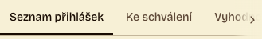
Po úpravě · jeden řádek záložek s pravostranným posuvným vodítkem.
Filtry přihlášek navíc využívají celou šířku řádku; na širší obrazovce jsou přehledně vedle sebe.
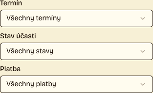
Mobil · filtry přes celou šířku.
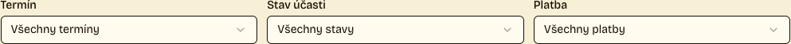
Desktop · tři filtry vedle sebe.
2
Tabulky na 360 px skrývají klíčové sloupce
Vysoká
Přihlášky, Akce a turnusy, Ubytování → Obsazenost po termínech, landing „Pro organizátory“ · 360 px
Problém
Tabulky se posouvají ve vlastním kontejneru, ale bez náznaku. Viditelný zůstává jen první sloupec: chybí stav platby a dluh, místo akce nebo počet volných lůžek. Posuvné oblasti nejdou zaměřit klávesnicí (axe: scrollable-region-focusable).
Dopad
Na telefonu nejde zjistit, kdo dluží nebo kolik je volných míst. Uživatel klávesnice se ke skrytým sloupcům nedostane vůbec.
Doporučení
Na úzkých displejích zobrazit řádky jako karty s nejdůležitějšími údaji, nebo alespoň přidat stín či šipku na okraji posuvné oblasti. Kontejner tabulky zpřístupnit klávesnici (tabindex="0" a popisek).
Akce a turnusy: z místa zbylo „Sokolovna…“.Ubytování: „Volná lů…“.
Mimo scope · mobilní tabulky v tomto scope neupravujeme a nepřidáváme k nim nápovědu. Pojmenované oblasti přístupné klávesnicí zůstávají zachované. Pokud bude mobilní práce s tabulkami prioritou, navrhneme pro ně karty v některém z dalších sprintů.
3
„Odhlásit se z akce“ vedle „Odhlásit se“
Střední
Moje přihlášky → detail přihlášky · nejvýraznější na mobilu
Problém
Nevratná akce „Odhlásit se z akce“ (zrušení účasti) je první tlačítko stránky. Hned nad ní je v hlavičce „Odhlásit se“, které jen ukončí přihlášení do aplikace. Stejné sloveso popisuje dvě zcela odlišné věci.
Dopad
Účastník, který se chce jen odhlásit z aplikace, může omylem otevřít zrušení účasti, nebo naopak hledat zrušení účasti v hlavičce.
Doporučení
Přejmenovat na „Zrušit účast“ a umístit obě akce na začátek detailu před přehled přihlášky; na telefonu mohou tlačítka zabrat celou šířku.
„Odhlásit se“ v hlavičce a „Odhlásit se z akce“ hned pod ní.
✓ Zapracováno · obě akce jsou nahoře pod názvem akce; „Zrušit účast“ je jasně pojmenované a na telefonu mají tlačítka celou šířku.
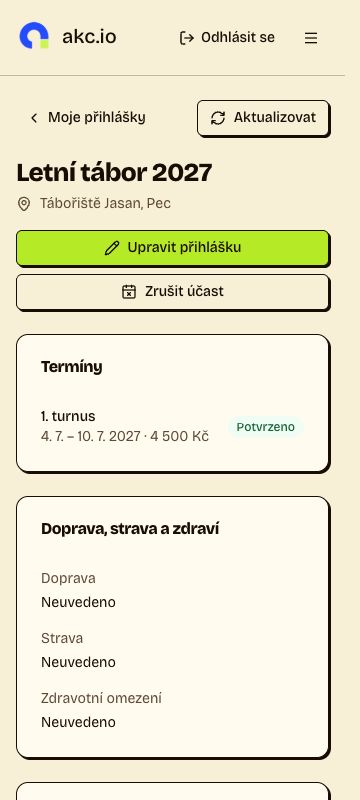
Po úpravě · akce před přehledem přihlášky, přehled začíná hned pod nimi.4
Technický název časového pásma u data
Střední
Moje přihlášky (seznam i detail) → Platba → Datum připomenutí platby · potvrzení po odeslání veřejné přihlášky („Přijato … (Europe/Prague)“)
Problém
Datum se zobrazuje jako „16. 9. 2026 (Europe/Prague)“, stejně tak čas přijetí na potvrzení přihlášky. Identifikátor z databáze časových pásem nic neříká běžnému účastníkovi.
Doporučení
Čas zobrazit místně, bez technického názvu pásma a bez doplňujícího štítku o místním čase.
„16. 9. 2026 (Europe/Prague)“.
✓ Zapracováno · čas se zobrazuje místně bez technického názvu pásma i bez dovysvětlujícího štítku.
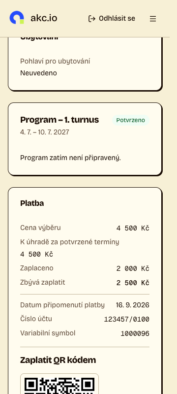
Detail přihlášky · datum bez identifikátoru pásma.
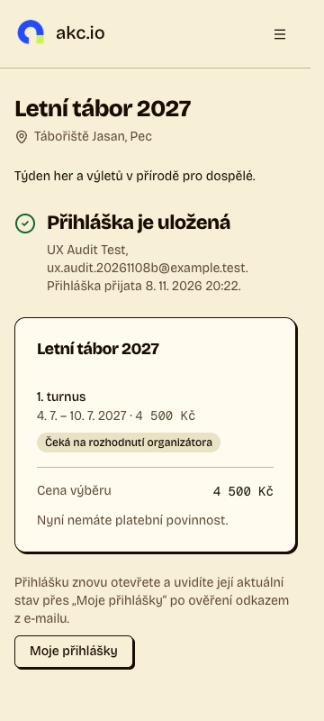
Potvrzení přihlášky · místní čas bez štítku.
5
Nevyhodnocený termín hlásí čtyři stavy najednou
Střední
Přihlášky → Vyhodnocení · termín bez proběhlého vyhodnocení · desktopový viewport 1440 × 900 px
Problém
Současně je vidět „Bez návrhu“, „Aktualizuje se automaticky“, „Termín zatím nebyl vyhodnocen“ a „Bez platného návrhu“. „Potvrdit všechny vhodné“ je zakázané bez vysvětlení.
Dopad
Není jasné, jestli má organizátor čekat na automatické vyhodnocení, nebo kliknout na „Přepočítat“.
Doporučení
Jedno hlášení s dalším krokem, např. „Termín zatím nebyl vyhodnocen. Návrh vznikne automaticky, nebo ho spusťte tlačítkem Přepočítat.“ U zakázaného tlačítka uvést důvod.
Před úpravou · desktopový viewport 1440 × 900 px, čtyři varianty téhož stavu a zakázané tlačítko.
✓ Zapracováno · jeden stavový popis vysvětluje další krok i proč hromadné potvrzení zatím není dostupné.
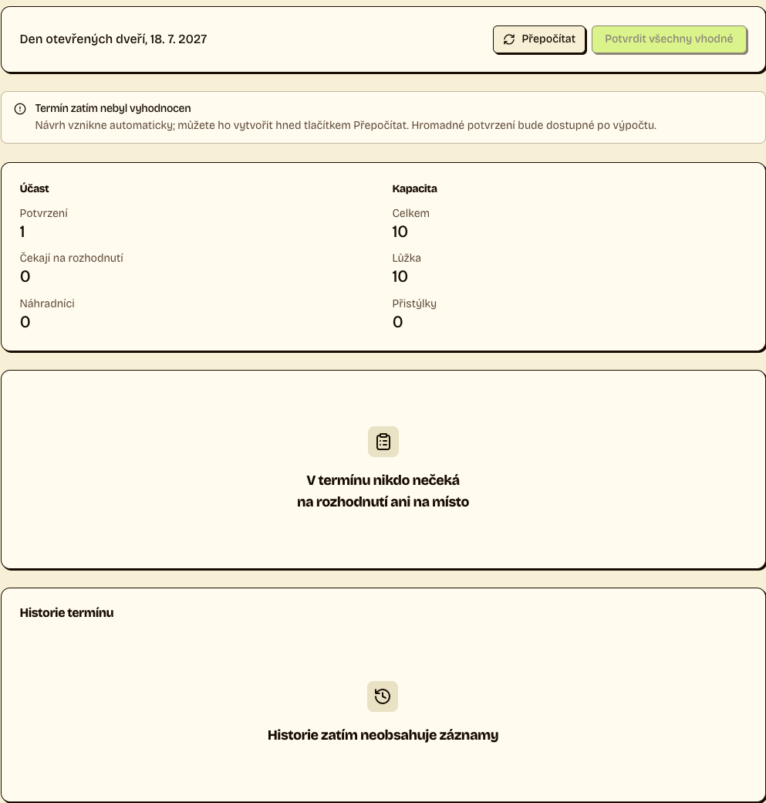
Po úpravě · desktopový viewport 1440 × 900 px, panel nevyhodnoceného termínu s vysvětlením dalšího kroku.6
Oříznutý štítek „Připravujeme“
Střední
Postranní menu akce → Komunikace · desktop, světlý i tmavý režim
Problém
Štítek u položky „Komunikace“ přetéká za okraj postranního panelu a končí „Připravujem“. U kratších položek se vejde.
Doporučení
Povolit zkrácení popisku položky, nebo štítek nahradit ikonou s popiskem. Hlídat i delší názvy budoucích sekcí.
„Komunikace · Připravujem…“.
✓ Zapracováno · celý štítek „Připravujeme“ se vejde do postranního panelu.
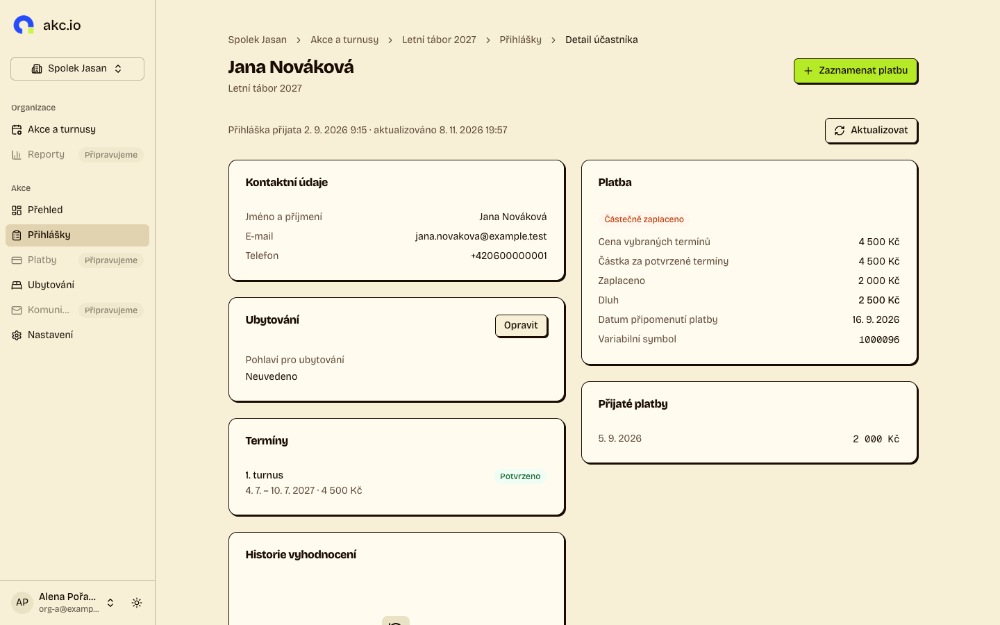
Po úpravě · celé štítky v navigaci.7
Obsah dashboardu mimo orientační oblasti
Střední
Všechny stránky organizátora na desktopu (axe: region, 3–8 prvků na stránku)
Problém
Nadpisy a skupiny postranního menu ani část hlavičky stránky neleží v žádné orientační oblasti (nav, main, aside).
Dopad
Uživatel čtečky obrazovky nemůže přeskočit mezi menu a obsahem pomocí oblastí; musí procházet prvek po prvku.
Doporučení
Postranní panel obalit do <nav aria-label="Navigace akce"> a obsah stránky do <main>.
✓ Zapracováno · navigace organizace má přístupný název a obsah dashboardu je v oblasti main.
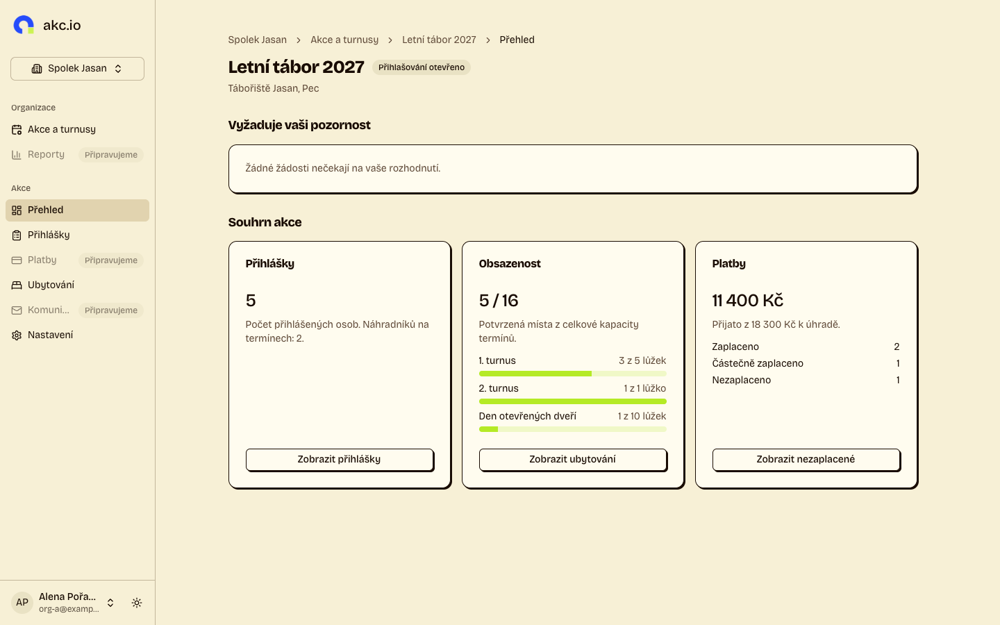
Aktuální UI · přehled akce s pojmenovanou navigací a oblastí main.8
Každá sekce téže akce má jinou šířku a levý okraj obsahu: Přihlášky začínají u 336 px, Přehled a Nastavení u 400 px, Upravit akci u 560 px. Drobečková navigace a nadpis při přepínání sekcí „skáčou“.
Doporučení
Sjednotit kontejner stránky: stejný levý okraj pro všechny sekce, užší sloupec jen uvnitř formulářů.
✓ Zapracováno · přehled, přihlášky, nastavení i úprava akce sdílejí stejný levý okraj obsahu.
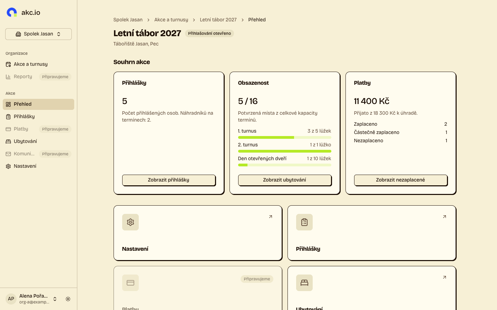
Přehled
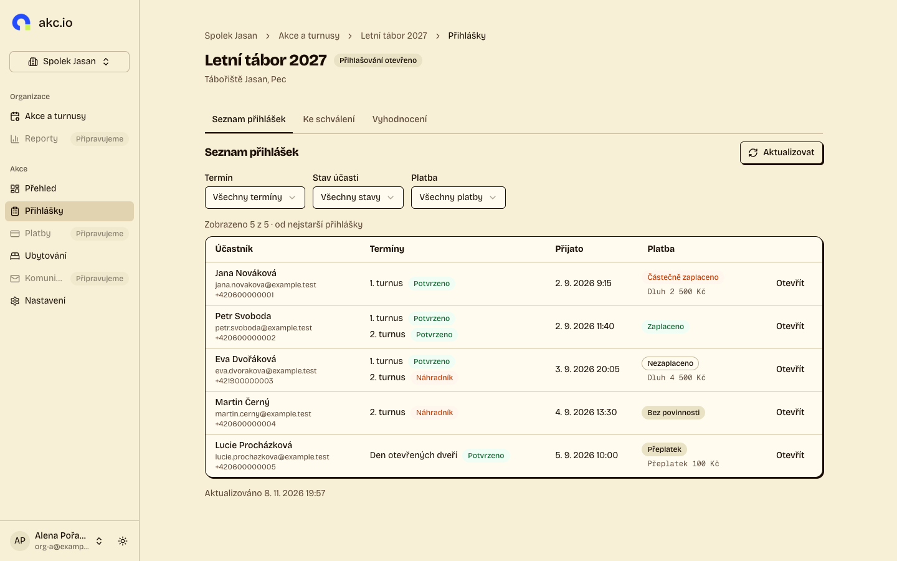
Přihlášky
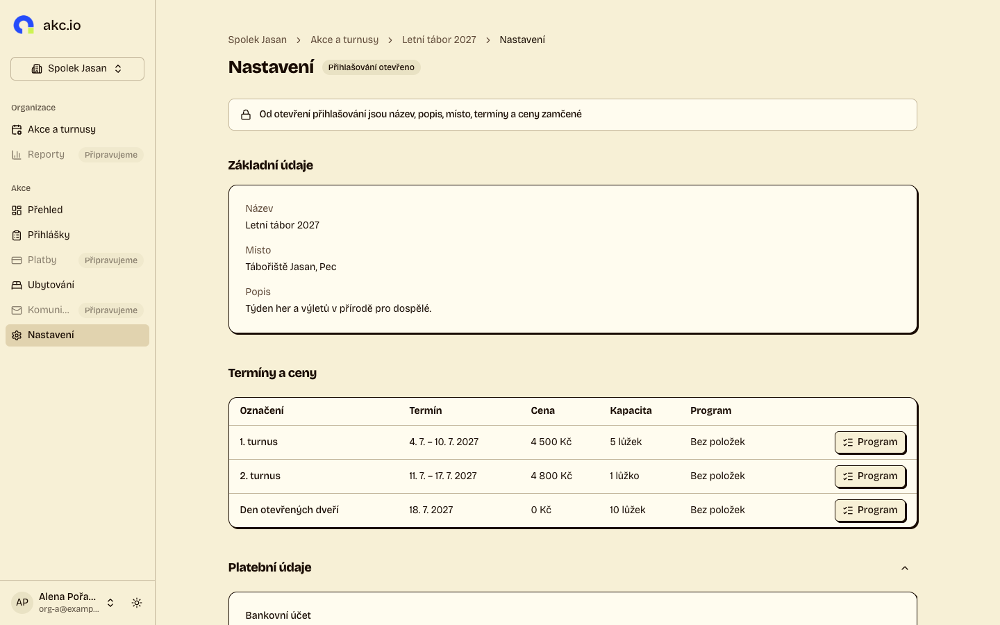
Nastavení
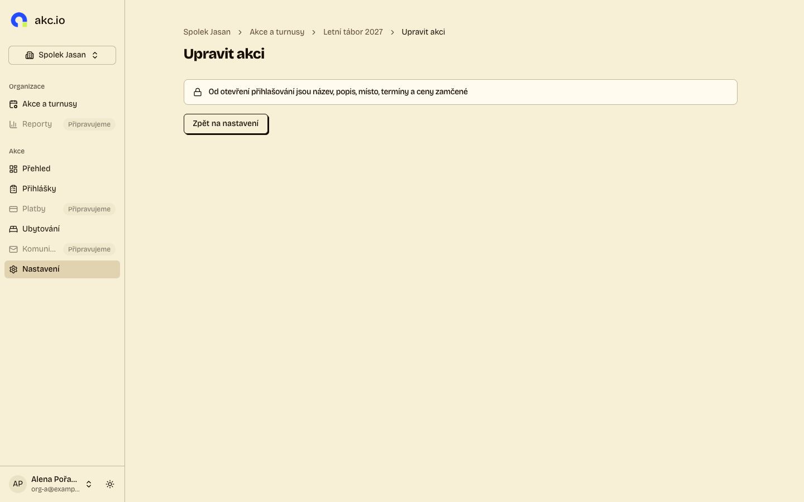
Upravit akci · upozornění na šířku obsahu, úzký sloupec vyhrazený pro formulář.
9
Částky střídají dvě písma
Nízká
Seznam přihlášek (Dluh, Přeplatek), Přijaté platby, Moje přihlášky → Platba
Problém
Stejné údaje o penězích jsou jednou v neproporcionálním písmu („Dluh 2 500 Kč“, „2 000 Kč“ v Přijatých platbách, celá karta Platba u účastníka), jinde proporcionální (karta Platba u organizátora).
Doporučení
Částky zobrazovat jednotně monospace s tabulárními číslicemi napříč seznamem přihlášek, organizátorským i účastnickým detailem a historií plateb. Písmo monospace ponechat také pro variabilní symbol a číslo účtu.
Před úpravou
Seznam přihlášek · částky monospace.
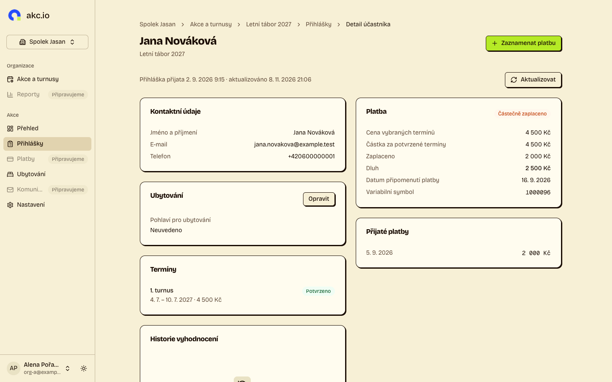
Organizátorský detail · částky běžným písmem.
✓ Zapracováno · částky v seznamu, organizátorském a účastnickém detailu i historii plateb používají monospace s tabulárními číslicemi.
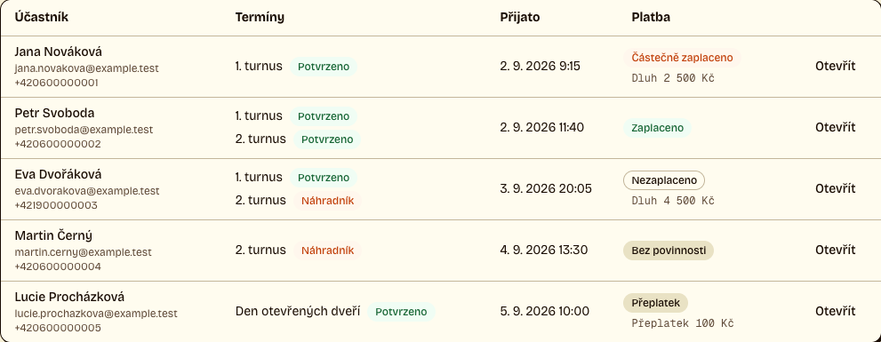
Po úpravě · seznam přihlášek.
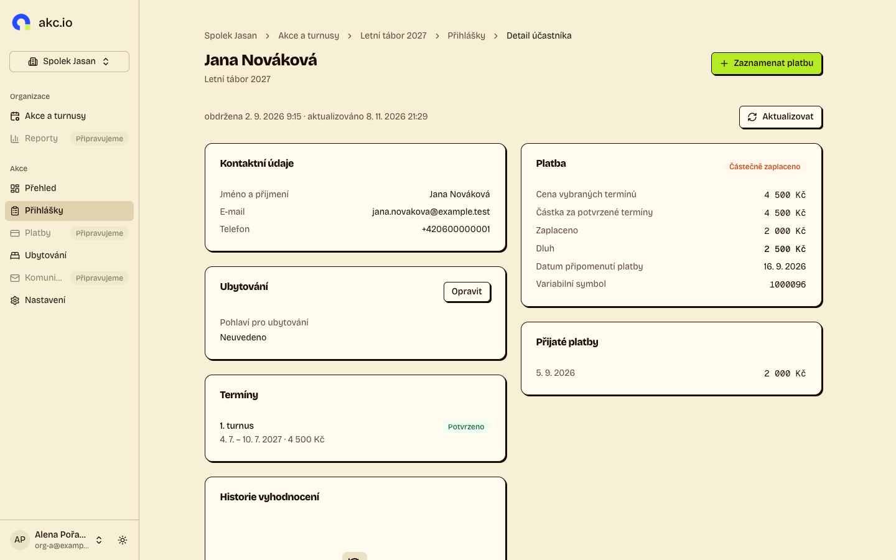
Po úpravě · organizátorský detail a přijaté platby (desktop, 1440 × 900 px).
10
„Přijato“ ve dvou významech
Nízká
Správa akce → Přihlášky → detail přihlášky
Problém
„Přijato 2. 9. 2026 9:15“ v hlavičce znamená přijetí přihlášky, „Přijato 2 000 Kč“ v kartě Platba přijaté peníze. Účastník pro tutéž částku vidí „Zaplaceno“.
Doporučení
V hlavičce jednoslovně „obdržena 2. 9. 2026 9:15“ ve stejné velikosti jako údaj o aktualizaci, v platbě „Zaplaceno“, jednotně pro organizátora i účastníka.
Dvakrát „Přijato“ na jedné obrazovce.
✓ Zapracováno · hlavička používá jednoslovné „obdržena“ ve stejné malé velikosti jako údaj o aktualizaci; karta platby používá „Zaplaceno“.
Aktuální desktop · „obdržena“ malým písmem na stejné úrovni jako údaj o aktualizaci.12
Rozcestník opakuje menu
Nízká
Správa akce → Přehled · desktop
Problém
Pod souhrnem akce jsou velké dlaždice Nastavení, Přihlášky, Platby a Ubytování. Stejné odkazy už nabízí postranní menu a tlačítka v kartách souhrnu („Zobrazit přihlášky“, „Zobrazit ubytování“). Dlaždice zabírají polovinu obrazovky a nenesou žádnou informaci.
Doporučení
Dlaždice odstranit, nebo je nahradit informacemi, které jinde nejsou (např. co čeká na schválení).
Dlaždice pod souhrnem akce.
✓ Zapracováno · opakující se dlaždice byly nahrazeny kompaktním panelem „Vyžaduje vaši pozornost“, který ukáže čekající žádosti o změnu přihlášky a vede přímo na jejich schválení. Pokud žádné žádosti nečekají, přehled to stručně potvrdí. Postranní menu zůstává hlavní navigací; souhrn si ponechává kontextové odkazy na přihlášky a ubytování.
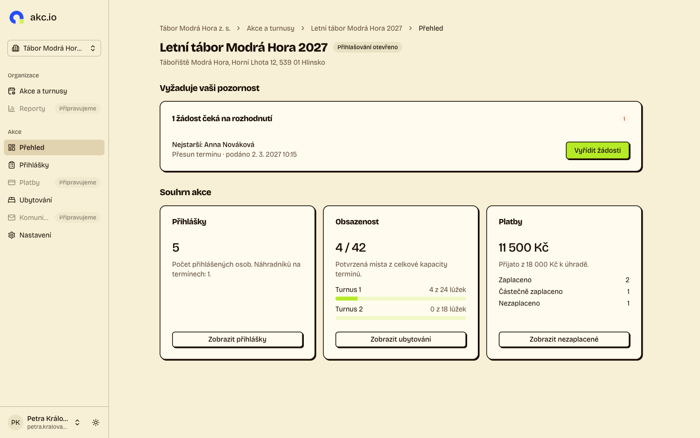
Po úpravě · desktop 1440 × 900 px, otevřená akce s jednou čekající žádostí o změnu.13
Zamčená úprava akce je slepá stránka
Nízká
Nastavení → Upravit akci · akce s otevřeným přihlašováním
Problém
Po otevření přihlašování vede „Upravit akci“ na stránku, která obsahuje jen hlášení o zamčení a tlačítko zpět. Totéž hlášení už je v Nastavení.
Doporučení
Odkaz na úpravu u zamčené akce nenabízet, nebo ho zakázat s vysvětlením přímo v Nastavení.
✓ Již vyřešeno · nastavení vysvětluje uzamčení a nenabízí slepý odkaz „Upravit akci“.
Aktuální Nastavení · důvod uzamčení je vysvětlen přímo na stránce.
Odložené nálezy
#2 Tabulky na 360 px skrývají klíčové sloupce zůstává mimo dohodnutý scope.
Zkontrolováno bez nálezu
Na šířce 1440 px i 360 px, ve světlém i tmavém režimu: bez vodorovného posouvání stránky a bez dalších nálezů kromě obecného nálezu 7 (orientační oblasti dashboardu):
✓ Úvodní stránka, Pro organizátory (kromě tabulky, viz nález 2), Pro účastníky
✓ Katalog akcí a veřejný detail akce
✓ Přihlášení a registrace organizátora
✓ Moje organizace, nová organizace, nová akce
✓ Nastavení akce, Ke schválení (prázdný stav), stránka 404
✓ Tmavý režim: kontrast textu a stavových štítků bez nálezu na všech stránkách
Metodika a omezení
Průchod všemi stránkami veřejného webu, účastnické části (přihlášený účastník) a organizátorského dashboardu na lokálním prostředí s demonstračními daty ze seedu.
Každá stránka ve čtyřech variantách: desktop 1440 × 900 a mobil 360 × 800, světlý a tmavý režim. Celkem 88 obrazovek.
Automatické kontroly na každé obrazovce: přetečení šířky stránky, pravidla přístupnosti axe-core 4.13 (WCAG 2.1 AA) a chyby v konzoli. Vizuální posouzení podle DESIGN.md.
Lokální databáze obsahuje i data z end-to-end testů (akce s generovanými názvy), proto texty veřejného katalogu nebyly posuzovány obsahově.
Nebyla posouzena stránka programu termínu a interaktivní stavy dialogů (otevřené, chybové, fokus). Patří do vizuální kontroly dashboardů v #242.